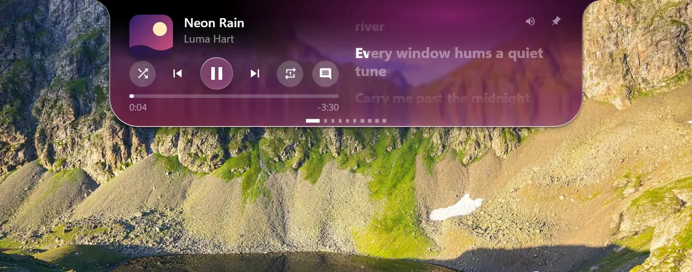
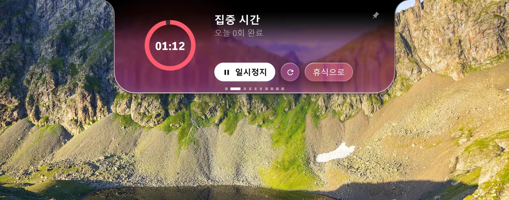
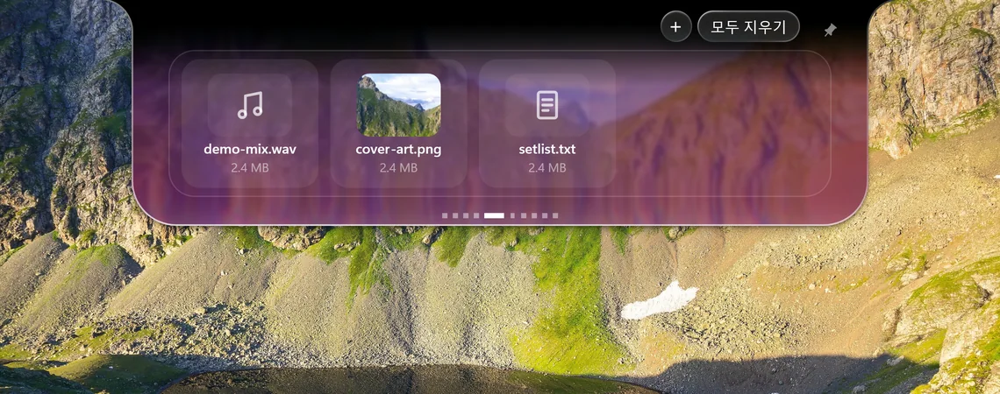
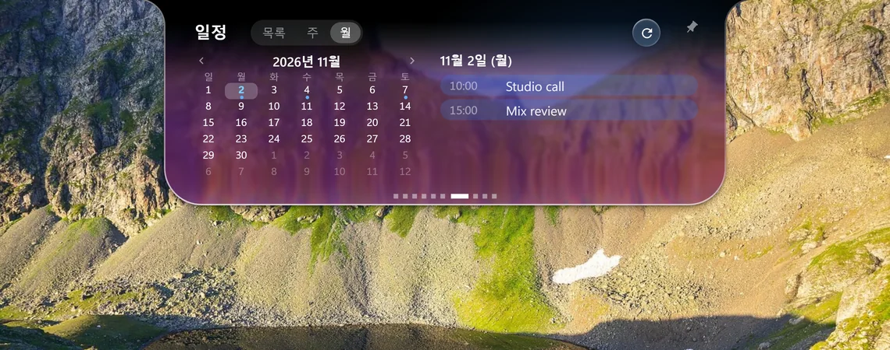
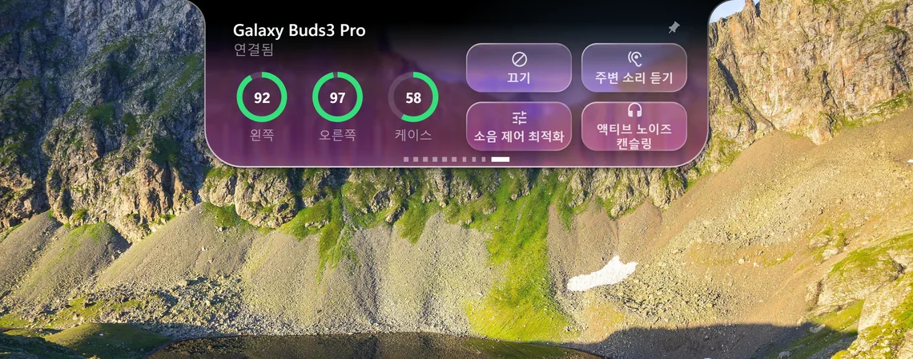
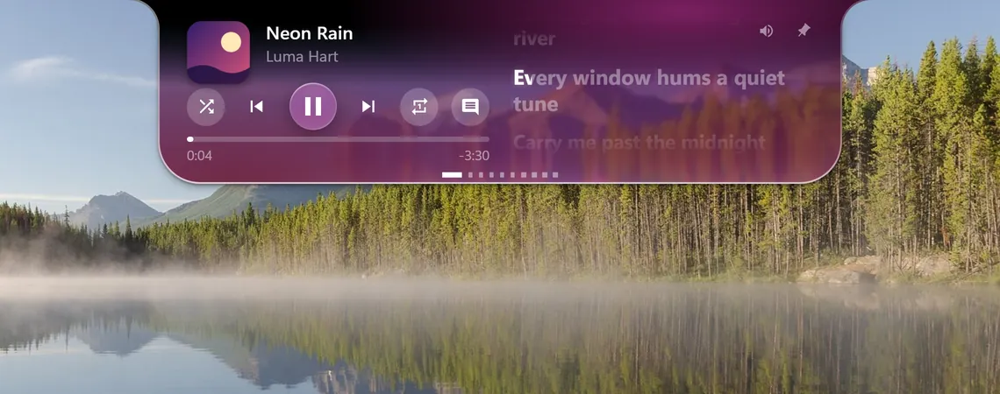
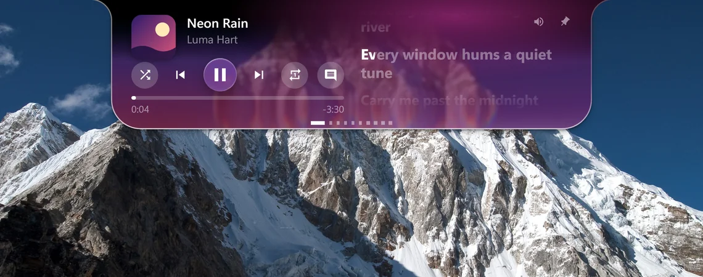
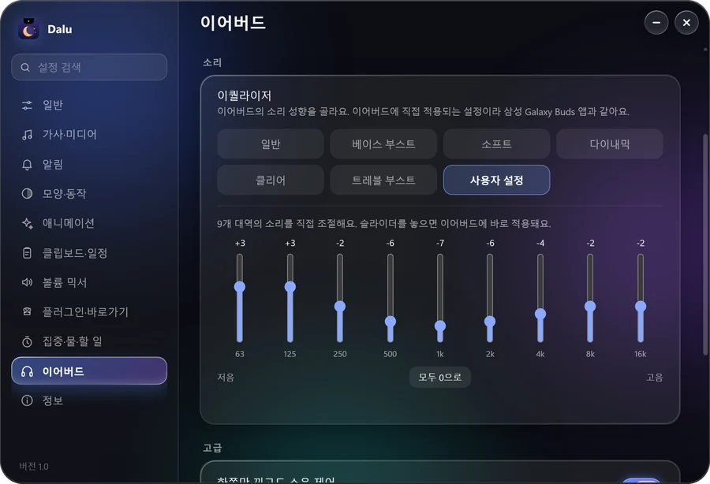
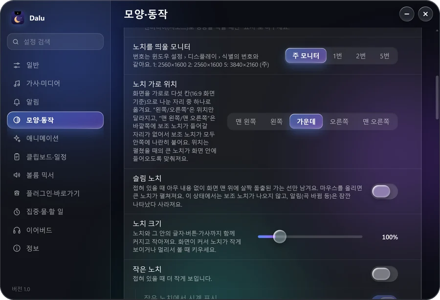

목소리를 따라오는 가사.
Streetlights bloom along the river.
Every window hums a quiet tune.
Carry me past the midnight bridges.
타이밍 정보가 있는 곡이라면, 단어 하나하나까지.

단어마다, 딱 맞게.
타이밍 정보가 있는 곡은 부르는 순간 단어가 켜져요.

하나에만 집중.
포모도로, 타이머와 스톱워치 기록, 물 마시기, 할 일을 노치 안에서.

올려 두고, 들고 가요.
노치에 파일을 올려 두고 원하는 창으로 끌어다 놓으세요.

오늘을 한눈에.
캘린더 주소(.ics)를 붙여 넣고 목록, 주, 월로 보세요.

한 번에 조용하게.
갤럭시 버즈의 소음 제어를 아무것도 열지 않고 바꿔요.
그냥 검정, 아니면 리퀴드 글래스.
스크롤하면 두 모습이 오가요.


뒤의 세상을 휘어 보이는 유리.
배경화면을 골라 보세요. 노치가 뒤 화면을 굴절시켜요.




점에 올리면, 탭이 보여요.
작은 점에 올리면 탭 아이콘으로 바뀌어요. 아이콘마다 무엇인지 알려 드릴게요.
탭 아이콘
- 음악곡 정보, 재생, 가사
- 집중포모도로
- 타이머타이머, 스톱워치와 구간 기록
- 물물 마실 시간 알림
- 선반파일을 잠깐 올려 두기
- 할 일시각을 정해 알려 줘요
- 일정목록, 주, 월 보기
- 바로가기자주 쓰는 앱과 폴더
- 플러그인다른 앱을 노치에서 조작
- 이어버드배터리와 소음 제어
구석의 아이콘
- 음량소리 크기와 음소거
- 고정눌러 두면 노치가 접히지 않아요
내 자리에, 내 방식으로.
화면 위쪽을 다섯 칸으로 나눠 노치를 옮겨요. 맨 끝에서는 보조 노치가 안쪽에 모여요.

접으면 가는 선만 남고, 올리면 펼쳐져요.
DirectX·OpenGL·Vulkan 게임이 앞에 있으면 노치가 숨어요.
아홉 밴드, 나만의 소리.
이퀄라이저를 맞추고(슬라이더를 움직이는 대로 바로 들려요), 게이밍 모드를 켜고, 이어버드 한쪽만 끼고도 소음 제어를 유지해요.
Buds3 Pro에서만 확인했어요.

내 방식대로.
설정 100개 넘게, 4개 언어, 플러그인은 JSON 파일 하나로.

- 설치
- 관리자 권한 없이 설치해요.
- 확인
- 다운로드 페이지에 SHA-256 값이 있어요.
- 라이선스
- 소스 공개, 비상업적 이용 가능(PolyForm Noncommercial 1.0.0).
코드 서명이 없어서 처음에는 Windows SmartScreen이 경고할 수 있어요.